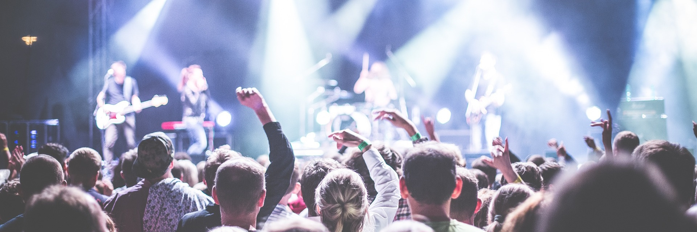

Sport et culture

Sport
Un centre sportif est présent à Triskalya. Il comporte :
- 2 salles de sports collectifs
- 1 salle de musculation
- 1 dojo
- 4 courts de tennis
La commune possède également une piscine avec 2 bassins : un bassin d'apprentissage et un bassin sportif.
De nombreuses associations sportives sont présentes dans la commune de Triskalya ha Plafälda. La proximité avec la mer et la montagne permettent une grande diversité d'activités. La commune soutient financièrement une grande partie de ces associations.
Culture
Pour la commune, la culture est un enjeu essentiel et contribue grandement à sa visibilité. L'événement pahare de la ville est le Festival des Triskalyades, organisé tous les ans dans la commune. Il rassemble plus de 10000 personnes autour d'artistes du moment et d'étoiles montantes de la scène musicale aglitanienne.
La commune s'est lancée dans un grand plan de rénovation de ses infrastructures culturelles. Sont concernées les 4 salles polyvalentes mises à la disposition d'organisateurs d'événements, l'école de musique communale et les différentes médiathèques.
La médiathèque de Triskalya fait partie du réseau des Médiathèques du Plafälda, géré par le district. Elle possède une large collection de livres et de DVD pour tous les publics. Elle propose également plusieurs jeux de société, des animations et des ressources numériques.
Riche de sa longue histoire, la commune de Triskalya ha Plafälda possède également un patrimoine culturel préservé. Voici quelques sites emblématiques très appréciés des touristes et des riverains:
- La tour Humäls : Point remarquable de la ville, elle appartenait à un ancien beffroi, témoin de l'indépendance de la ville.
- Eglise Sy-Hatar de Triskalya : Eglise de style gothique bâtie vers la fin du XIVe siècle.
- Place de la Fédération : Aménagée dès le milieu du XVIIe siècle pour célébrer la proclamation de la République fédérale d'Aglitanie.
- Hôtel de ville : Bâtiment de style art déco construit au début du XXe siècle pour accueillir la mairie de Triskalya.